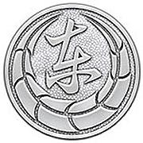
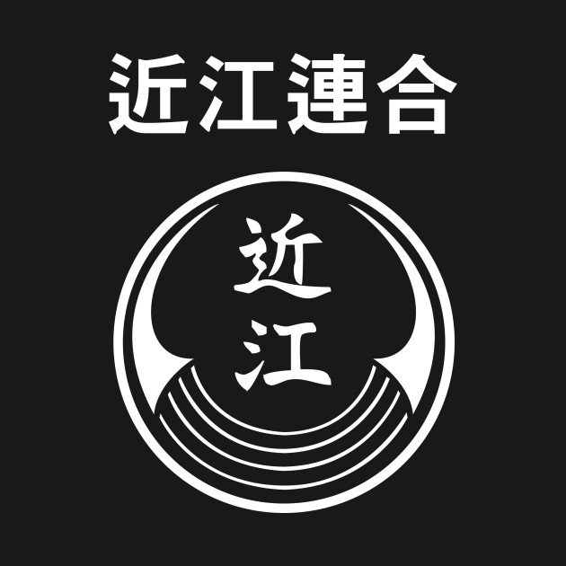
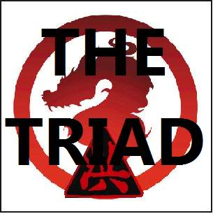
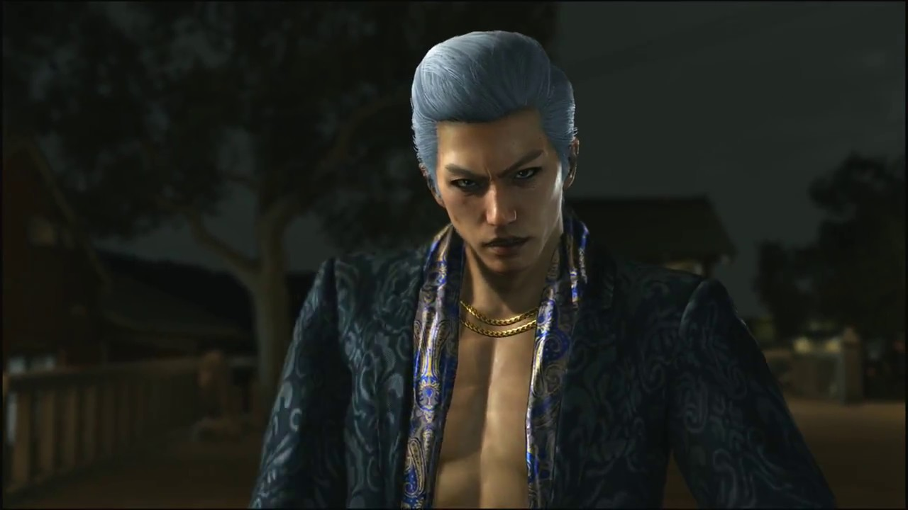

Tojo Clan
The Tojo Clan or "Tojo Association" (東城会, Tōjō-kai) was founded by Makoto Tojo and, since 2008, is headed by its 6th Chairman Daigo Dojima of the Dojima Family. It is Kanto's largest yakuza organization, made up of more than 30,000 men.
Omi Alliance
in Goda is the elderly 5th chairman of the Omi Alliance, and adoptive father of Ryuji Goda. However, he has difficulty controlling the organization since it has become too big for him to handle. He is kidnapped by Ryuji in a coup d'état, along with Daigo Dojima, after Kazuma Kiryu attempts to create a peace deal between the Tojo and the Omi. In the final chapter of the game, Jin explains the truth about Ryuji's original family. He took Ryuji in at the request of his real mother Suyeon, wife of the Jingweon boss, and mother of Kaoru Sayama. In the end, he is shot and killed by Ryo Takashima.
Saio Triad
Saio Triad's track record in Japan dates back a long time. Before World War II, its then-chairman, who was Big Lo's father, had a close relationship with Takeru Kurusu. However, the bond between both parties froze after the war, but negotiations picked up during the early days of Big Lo's chairmanship 30 years before. The Triad's business back then was smuggling heihaizi (undocumented children who were born outside China's one-child policy) to Japan, specifically Onomichi. During the events of Yakuza 6, the Triads are on the hunt for the yakuza and anyone who has a connection to them.
Jingweon Mafia
Jingweon Mafia is a Korean mob organization featured primarily in Yakuza 2/Yakuza Kiwami 2 and returned in Yakuza 6. In 1980, a massacre happened in Kamurocho where many of its members are murdered, leaving only three surviving victims. 26 years after the incident, they made a return and are on the hunt for Kiryu. The mafia returned for a second time in 2016, now led by Joon-gi Han, who holds a personal grudge against Kiryu for what happened in 1980.
